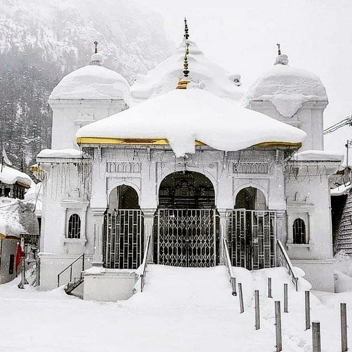

Featured Photos



Gangotri, situated in the Uttarkashi district of Uttarakhand, is one of the Char Dham pilgrimage sites and holds immense religious significance for Hindus. It is the place where the holy River Ganges originates from the Gangotri Glacier. At an elevation of approximately 3,100 meters (10,200 feet) above sea level, Gangotri is surrounded by snow-capped peaks, lush forests, and breathtaking landscapes. The main attraction of Gangotri is the Gangotri Temple, dedicated to Goddess Ganga. Thousands of devotees visit Gangotri every year to pay homage to the Goddess and take a dip in the sacred waters of the Ganges. Apart from its religious importance, Gangotri offers mesmerizing views, tranquil surroundings, and opportunities for trekking and spiritual rejuvenation.